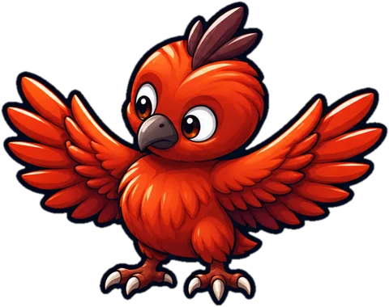

 Fire
Fire Wind
WindTap a stage to read its story.
Pyrrit is a round, fluff-covered red bird that spreads its small wings wide and leans into the dune-wind as though daring it to move. A tiny red crest pokes from its forehead, and its whole body is the warm amber-red of a coal just cooling. It cannot fly yet but it runs across sand dunes at surprising speed, wings out for balance, making one quick screechy call every time it crests a dune - as though announcing its own arrival at the top. Sand dune travelers watch for them as signs of an upcoming afternoon wind.
Field note: Pyrrit always positions itself at the very highest point of any dune, even if it has to run up and down three times to find it.
Sand Dunes. Pyrrit and its family are found in the Sand Dunes. See everyone who lives there.
Share a Bond Food that matches its types to become friends. Pyrrit loves:
A Bond Food is not a trick. It joins your spirit with the Kimuro's spirit, and only when it chooses you.
Print the Kimuro adventure packs: mazes, cards, a board game and Bond Mark medals.
See the printable packs